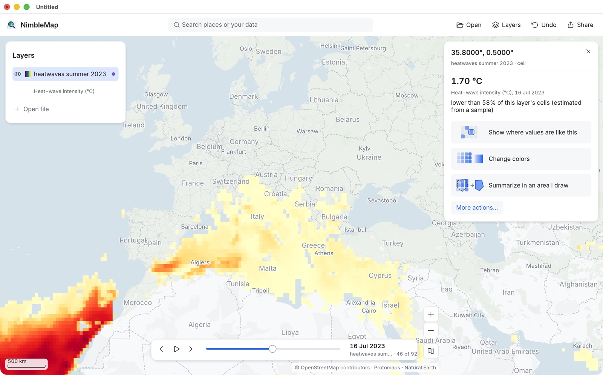
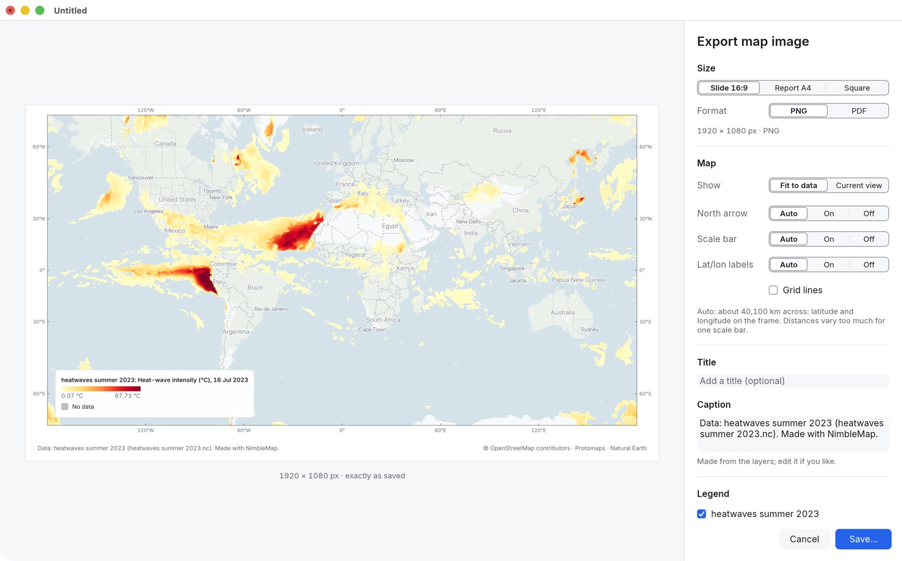

-
打开示例
在欢迎卡片上点 Examples（示例），或从菜单 File › Open Example 进入，选 Heatwaves, summer 2023（2023 年夏季热浪）。
图层 heatwaves summer 2023 出现在面板里，名字下方标着它的变量：Heat-wave intensity (°C)（热浪强度，单位 °C）。卡片用大白话介绍了这个文件：一个 NetCDF-4 文件，一个变量，720 × 360 的经纬度格网，Time: 1 Jun 2023 to 31 Aug 2023 (92 steps)（时间从 2023 年 6 月 1 日到 8 月 31 日，共 92 步）。第一行 Treated as measured values (averaged, not summed)（按测量值处理：取平均而不是求和）是应用做的一个假设，可以点 Change 修改。
-
播放整个夏天
因为这个图层带有日期，地图底部会出现时间滑块。点 Play（播放），或拖动滑块，或用 Previous step (←) / Next step (→)（上一步/下一步）；键盘上的左右方向键也行。右边显示当前日期（如 16 Jul 2023，即 2023 年 7 月 16 日）和第几步（46 of 92）。

2023 年 7 月 16 日：地中海沿岸、美国南部、墨西哥和中国都在高温中，西非和南美洲外海还有强烈的海洋热浪。 每一天用的都是同一套颜色范围，所以颜色越红就意味着热浪越强，而不是换了一种标尺。图例里也写明了日期：Heat-wave intensity (°C), 16 Jul 2023。
-
查看某个地点
放大到某个区域（滚动鼠标、双指缩放，或在搜索框里输入地名），点击一个有颜色的格子。卡片会显示这个格子当天的数值，以及它所处的水平：1.70 °C，lower than 58% of this layer’s cells (estimated from a sample)（低于该图层 58% 的格子，按抽样估算）。

没有上色的格子是无数据：当天那里没有出现热浪。点上去会显示 No value / This cell has no data.（没有数值，该格子无数据）。这和 “0” 不是一回事。
每个格子宽 0.5°，在赤道附近约 55 公里，所以一个数值代表的是一大块方格，而不是某一座城镇。详见分辨率。
-
让最热的地方更醒目
点图层卡片上的 Show only values above…（只显示高于……的值），低于你设定阈值的部分就会变灰；点 Change colors and range（更改颜色和范围），可以在 Style 标签页里换 Palette（配色）或调 Range（范围）。选中一个格子后，Show where values are like this（显示数值相近的地方）会把所有数值相近的格子都标出来。
-
把地图导出成图片
停在你想要的那一天，点 Share（分享）› Map image…（地图图片，⌘E）。弹出的面板里看到的，就是保存后图片的样子。

- Size（尺寸）：Slide 16:9（幻灯片，1920 × 1080）、Report A4（A4 报告）或 Square（方形）。
- Show（范围）：Fit to data（适应数据）或 Current view（当前视图，也就是窗口里看到的范围）。
- North arrow（指北针）、Scale bar（比例尺）、Lat/lon labels（经纬度标注）：选 Auto（自动）会挑选合适的组合。世界地图会在图框上标经纬度而不放比例尺，因为整张图上各处的距离比例相差太大。
- Title（标题）：例如 “2023 年 7 月 16 日的热浪”。Caption（说明）会根据图层和数据来源自动生成，你也可以修改。
点 Save…（保存）即可得到一张 PNG 图片。图例里带着日期，分享出去别人也能看懂。
想做一组连续画面？切到下一天再导出一次。每张图的颜色范围都一样，前后对比才公平。
数据：哥白尼全球干旱观测站（欧盟委员会联合研究中心 JRC），GDO 暖期强度（ERA5），2023 年；© European Union, 1995–2026，CC BY 4.0。为凌波微图（NimbleMap）截取了 6–8 月，平均到 0.5°，没有暖期的日子设为无数据。底图 © OpenStreetMap 贡献者、Protomaps、Natural Earth。